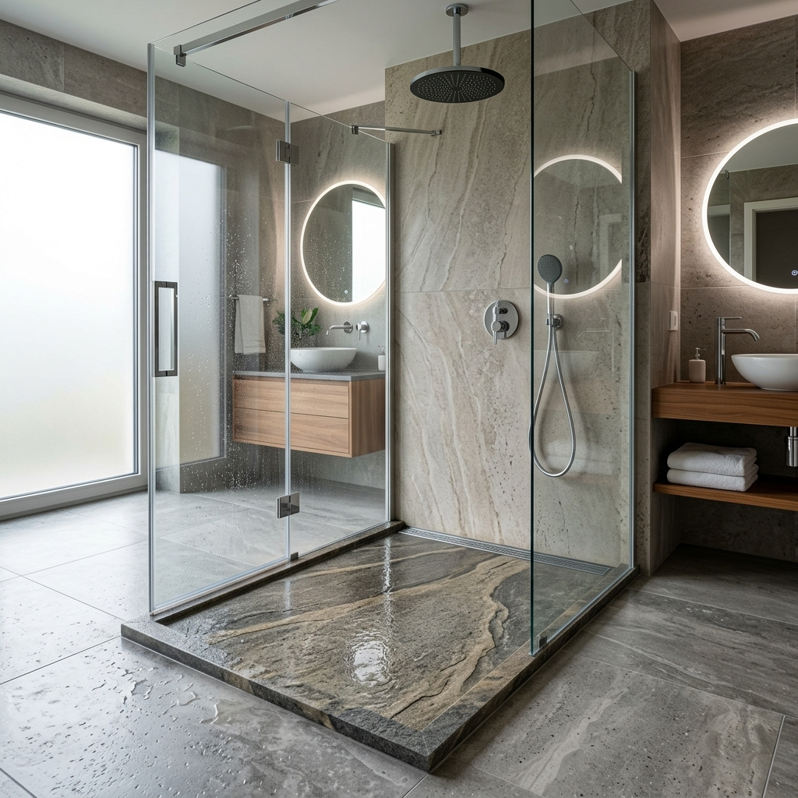
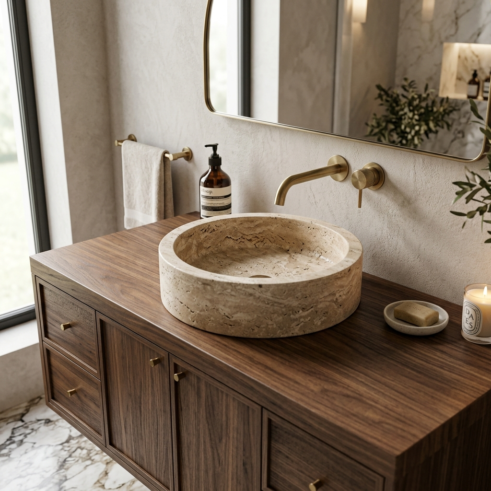

Vous rêvez d'une salle de bain unique et élégante ?
Ne cherchez plus ! Chez OC Stone, nous avons tout ce dont vous avez besoin pour créer ou embellir votre salle de bain selon vos goûts et vos envies. Nous sommes fiers de vous proposer une large sélection de produits de qualité supérieure, soigneusement sélectionnés pour répondre à vos besoins.
Nos receveurs et parois de douche
Chez OC Stone, nous sommes passionnés par la conception de salles de bains élégantes et fonctionnelles, et nous sommes fiers de vous offrir une gamme exceptionnelle de receveurs de douche en pierre naturelle, en grès cérame et bien plus encore!
Avec des dimensions standards ou sur mesure, nous avons tout ce qu’il faut pour répondre à vos besoins et s’adapter parfaitement à votre espace de douche. Nous sommes également spécialisés dans les cabines et les parois de douche.

Nos vasques
Vous méritez une salle de bain élégante et sophistiquée, et chez OC Stone, nous avons ce qu’il vous faut !
Découvrez notre large choix de vasques en pierre naturelle : travertin ou marbre, simples ou travaillées, et aux formes très variées voire inédites: rondes, ovales, carrées, rectangulaires, sur pied... Elles donneront à coup sur une touche de luxe à votre espace de bain.

Nos autres équipements
Nous vous proposons également une très large gamme de robinetterie moderne (design mural ou sur pied) et de toilettes suspendues élégantes, renouvelées lors de nos arrivages réguliers en showroom.
Besoin d'un conseil personnalisé ?
Nos experts sont là pour affiner votre choix et vous proposer un chiffrage précis.
Nous rendre visite en showroom